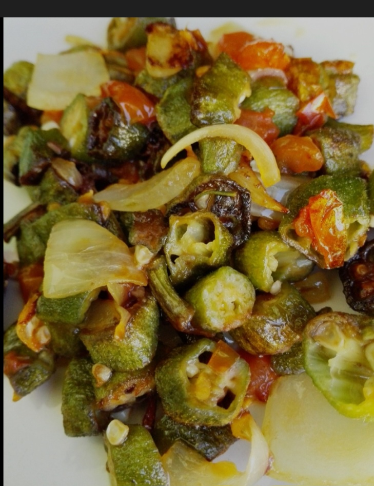

Fried okra

Description
This is the easiest recipe on fried okra you are going to find today. Here is what you need to follow this easy recipe.
Ingredients
Okra
Cooking oil
Salt
A tomato
An onion
Steps
Wash the okra, tomato and onion.
Dice the okra, tomato and onion seperately.
Heat the cooking oil in the frying pan
Once the oil is hot, you can start cooking your okra. Fry until the okra is golden brown
Once the okra is golden brown, you can add the diced tomato and onion to your cooking along with your desired amount of salt.
Fry until the diced tomato turns into gravy.